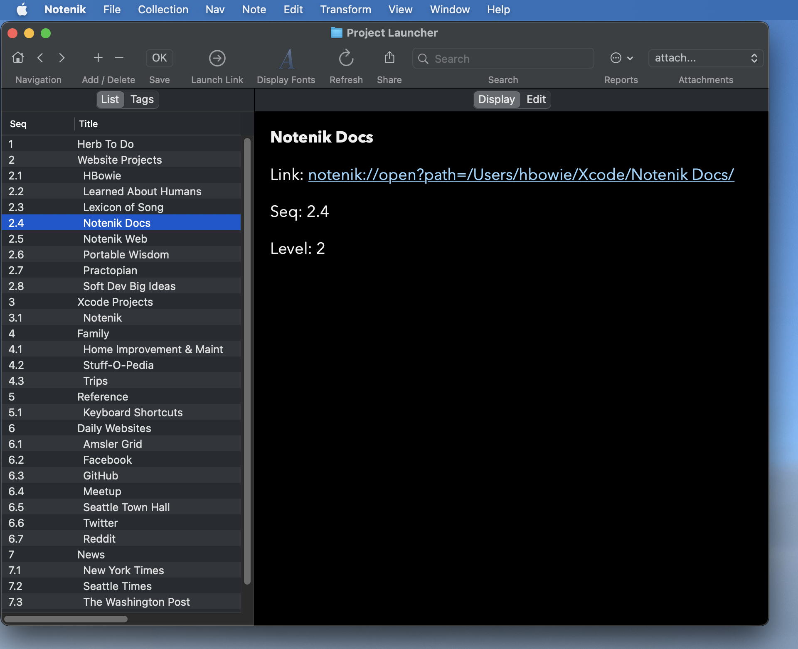

I’ve started using my own Mac app Notenik as a project launcher lately, and I wanted to share how I’ve set this up, in case someone else might benefit from it.
I’ll try to break this down into a rough sequence of separate steps, to make it easier to understand, but you don’t necessarily need to do all of this in any strict progression.
1. Set Notenik to Request Access at Startup
Notenik does not require Full Disk Access, and it is not set to request it. But if you want to use Notenik to its fullest as a project launcher, you might want to give it broad access to your files and folders.
Here’s the way I do this. In the Notenik Application Preferences, I set the General Pref of Grant Access to the value At Startup. Then whenever I launch Notenik (something I usually do once at the start of each day), Notenik will prompt me to select a folder to which it should have access. I then select my top-level user folder – hbowie, in my case – and click Grant Access. From that point on, Notenik will have access to anything in my user folder, and I won’t have to worry about any of my launch requests being thwarted due to lack of fresh permissions.
As an alternative to setting this as a Notenik preference, you can just use the Grant Folder Access menu item at any point later to accomplish the same thing.
2. Set Up Your Project Launcher
Create a New Collection. You can store it wherever you like, but I placed mine in the Notenik folder within iCloud Drive, just to make it easy to access. You can initialize it as a Sequenced List. However you initialize it, though, make sure the Link, Seq and Level fields are selected in your Collection Preferences, and then use Collection > Sort to sequence your list by Seq + Title. Name it however you like, but I called mine Project Launcher, just to show that I had no fear of the obvious.
3. Make the Project Launcher Essential
Use File > Make This Collection Essential so that it automatically opens for you whenever you launch Notenik. I then position it in the upper left corner of my screen.
4. Add Things You Want to Work On
Now start adding notes to your project launcher collection, with each note containing a Link to something you might want to work on.
As a reminder, once you’ve set a Link for a note, you only have to double-click on the row for that note in the List tab, in order to have Notenik launch that link for you.
As you add notes, you can use the Seq field to keep things in whatever order is most meaningful for you, and use the Level field as needed to indent sub-items beneath a meaningful heading.
As you add items to your project launcher, consider all of the different kinds of things that Notenik can launch for you.
5. Web Locations
Starting with the most obvious, you can stash a web URL in a Link field, in order to later open that site/page. (One easy way to do this is to drag a URL from your web browser’s Location/Search field into the List tab for your collection.)
If you’d like one or more web locations to automatically launch when your Project Launcher collection is opened, just give them Tags values of Launch at Startup.
6. Other Notenik Collections
You can also store the URL to another Notenik collection within a note’s Link field.
For example, I have a collection titled To Do that is also stored in the Notenik folder within my iCloud Drive. This collection has a Date field and a Recurs field and a Status field, and I use it to keep track of things I need to do on a regular basis, or on some specific date.
This used to be my Essential Collection, but it now sits at the top of my Project Launcher, with a Seq value of 1.
So I can just double-click on this first row to see a reminder of scheduled tasks that are due today.
Adding another Notenik collection to your project launcher can be done with three easy steps.
- Open the collection that you wish to target;
- Under the Collection menu, select the option to Copy Notenik URL for Collection;
- Back in your project launcher, add a new note, and then use the Paste command in the Link field to capture the Notenik URL you copied in the prior step.
Now all you have to do is double-click that item in your project launcher collection to open that other collection.
7. Custom URL Actions
Notenik, as well as many other Mac apps, have what are known as Custom URL Schemes, in which the name of the app appears at the beginning of the URL, instead of the usual https. You can use a launcher note to fire off any of these custom URL actions for Notenik or for any other app.
8. Local Files
Once you’ve created a new note, and while you’re still on the Edit tab, you can use Set Local Link beneath the Note menu to pick a local file that you wish to be opened by the new note. For example, selecting an Xcode project file will cause that Xcode project to be opened when the Link is launched.
9. Notenik Parent Realms
A Parent Realm in Notenik is simply an ordinary folder containing, possibly within subfolders, one or more resources that Notenik might be interested in, including:
- Notenik collections;
- Notenik scripts;
- BBEdit project files.
So, within the context of this project launcher discussion, a parent realm is a neat way to further organize your projects.
To create a launcher Note for a parent realm, start by using the Open Parent Realm command beneath the File menu, and then specify a folder containing one or more of the types of items identified above. You will then see the folder open as a sort of pseudo-collection, in its own window. From there you can invoke Copy Note for Collection, just as we described above for an ordinary collection, and then paste the resulting Link into a new note within your project launcher.
In my case, many of my projects are websites that I’ve created, with each folder containing the generated HTML, as well as Notenik collections, scripts and merge templates. So I store each website project folder as a separate item to be launched within my project launcher. Then, once I’ve opened the parent realm for a project, I can proceed to open items within that parent realm.
10. BBEdit Project Files
I mentioned above that Notenik will help you open BBEdit project files found within a parent realm.
Here’s the way I use this.
For each of my major projects (ones that I will be launching as parent realms), I use BBEdit to create a new project file, save it at the top level of my parent realm folder, then drag and drop my project folder onto the left side of the BBEdit project window.
Now when I open a parent realm from my launcher I’ll see a BBEdit project file listed, and can double-click on that to open the entire project folder in BBEdit. Then, if I later request from Notenik to Text Edit a note or a collection template file, that file will open within the BBEdit project window.
11. Opening Folders in the Finder
It’s also worth mentioning that, once you have opened a parent realm (or a simple collection, for that matter), you can ask Notenik to open the corresponding folder in the macOS Finder by using Open Folder in Finder beneath the File menu.
12. Putting It All Together
So here’s how I use all of this.
When I launch Notenik, it automatically requests appropriate disk access, and I give it permission to access my entire user folder.
Notenik then automatically opens my project launcher and positions it in the upper left corner of my screen. I then leave it there for the rest of the day, and come back to it each time I’m switching projects.
My project launcher lists all the things I might want to work on, with each note generally pointing to a parent realm (aka project folder) for that project.
When I switch my attention from one project to another, I close the windows I’ve opened for the old project, and then open the parent realm window for the new project. That window then usually sits with its upper left corner just below and to the right of the upper left corner for my project launcher.
From there I can open Notenik collections, run scripts, open the folder in BBEdit and the Finder.
And then start to get work done on the new project.
Anyway, it’s all working pretty well for me, so I thought I would share.